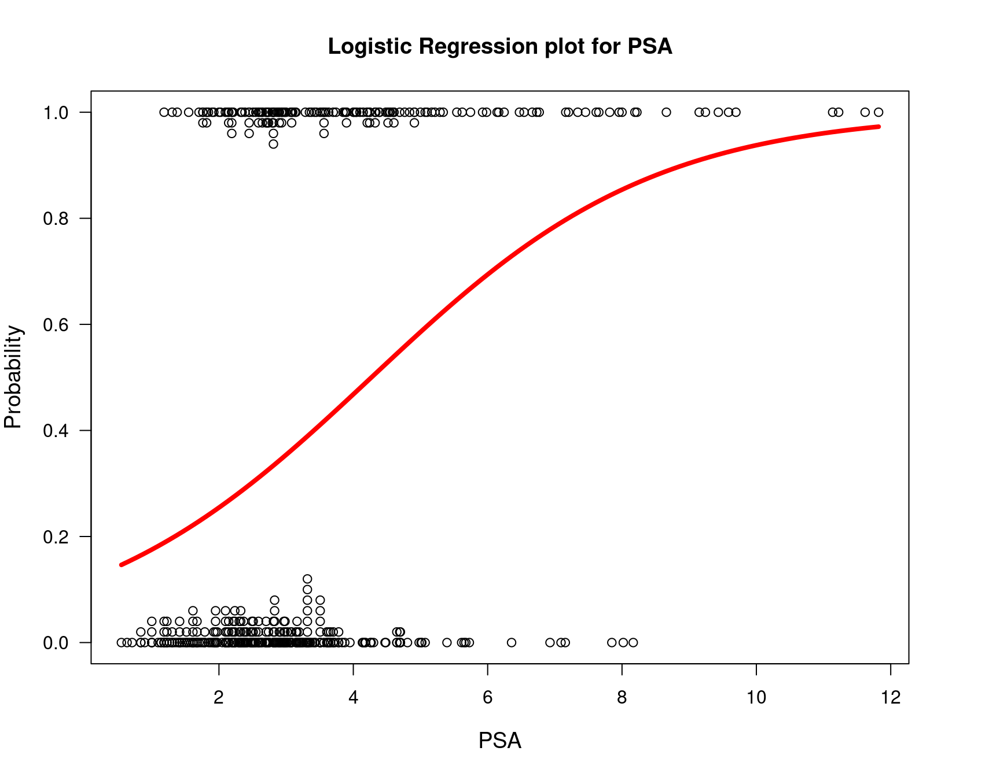
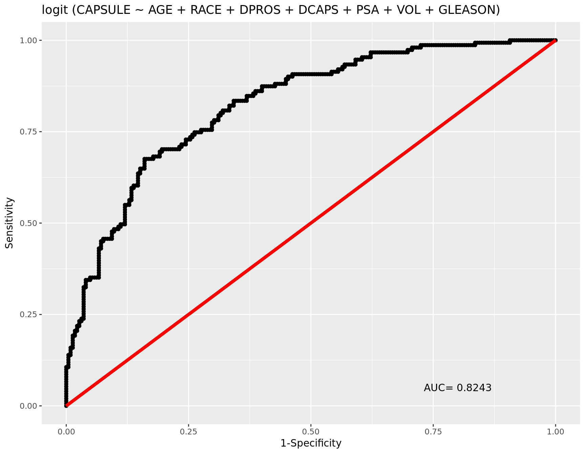
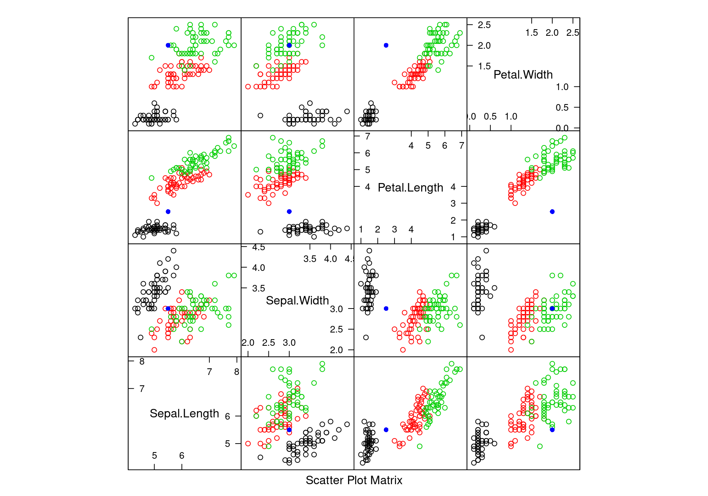
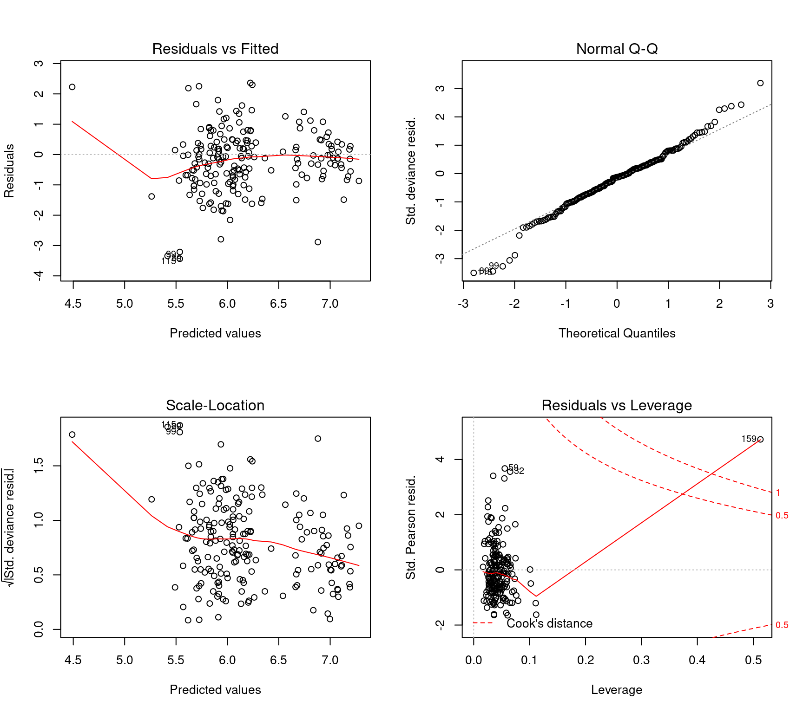
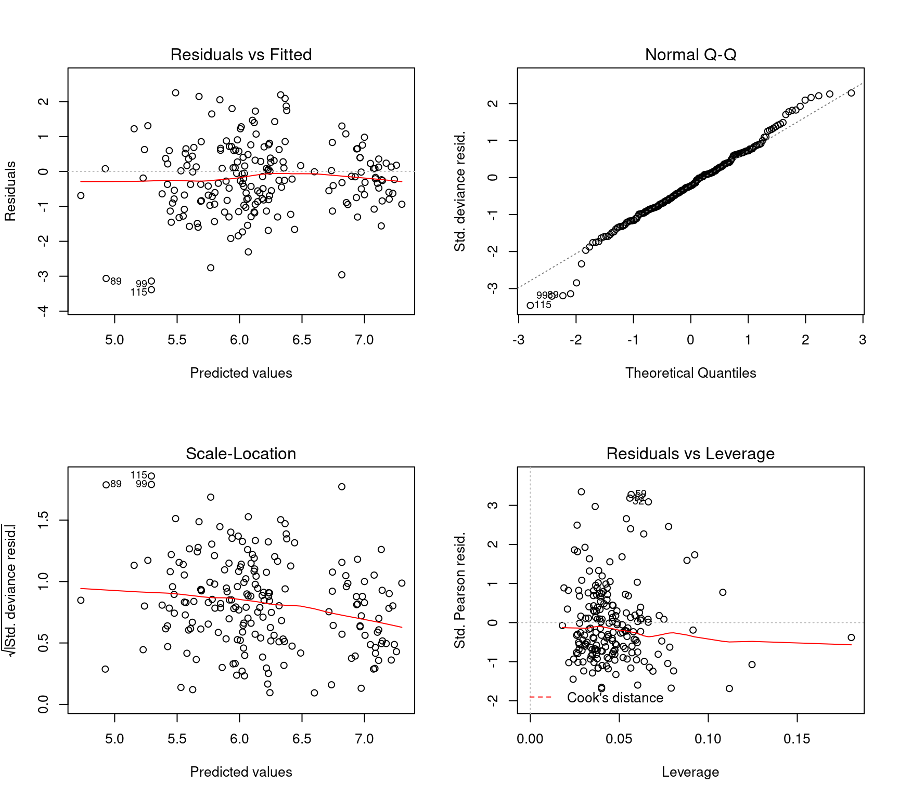

Regression Methods
Matrix Regression
library(mvtnorm)
## Covariance matrix for random data
A = matrix(c(3, 1.5, 1.5, 3), nrow = 2)
## number of observations to generate
n = 10
## Generate data
set.seed(1123)
(dta = rmvnorm(n = n, mean = c(10, 20), sigma = A)) [,1] [,2]
[1,] 11.675350 22.16815
[2,] 11.164364 18.89734
[3,] 12.400876 20.94524
[4,] 10.357397 21.56407
[5,] 10.109067 18.25317
[6,] 10.444637 19.84917
[7,] 10.451464 21.36056
[8,] 8.763568 19.40245
[9,] 8.923162 22.68341
[10,] 7.600346 18.09957## Create Y vector from random data
(Y = dta[, 1]) [1] 11.675350 11.164364 12.400876 10.357397 10.109067 10.444637 10.451464
[8] 8.763568 8.923162 7.600346## Create design matrix
(X = as.matrix(data.frame("b" = rep(1, n), "x" = dta[, 2]))) b x
[1,] 1 22.16815
[2,] 1 18.89734
[3,] 1 20.94524
[4,] 1 21.56407
[5,] 1 18.25317
[6,] 1 19.84917
[7,] 1 21.36056
[8,] 1 19.40245
[9,] 1 22.68341
[10,] 1 18.09957## Beta
B = solve(t(X) %*% X) %*% t(X)
## Solve coefficients
(B %*% Y) [,1]
b 4.0586986
x 0.3016549## Verify results
(mdl = lm(dta[,1] ~ dta[,2]))
Call:
lm(formula = dta[, 1] ~ dta[, 2])
Coefficients:
(Intercept) dta[, 2]
4.0587 0.3017 ## Hat Matrix
## Projected onto Y will give you Y-hat
## Diagonals of Hat Matrix are leverage
H = X %*% B
diag(H) [1] 0.2401398 0.1835194 0.1159607 0.1634227 0.2760978 0.1092077 0.1443377
[8] 0.1348034 0.3292979 0.3032130## Sum of squares X
SXX = sum((dta[, 2] - colMeans(dta)[2])^2)
## calculate leverage manually
## values greater than 4/n are considered high leverage
## for multiple regression Hii > 2 + (p + 1)/n are considered high leverage
1/n + (dta[, 2] - colMeans(dta)[2])^2 / SXX [1] 0.2401398 0.1835194 0.1159607 0.1634227 0.2760978 0.1092077 0.1443377
[8] 0.1348034 0.3292979 0.3032130## verify results
hatvalues(mdl) 1 2 3 4 5 6 7
0.2401398 0.1835194 0.1159607 0.1634227 0.2760978 0.1092077 0.1443377
8 9 10
0.1348034 0.3292979 0.3032130 ## Project Hat Matrix on to Y to get Y-hat
H %*% Y [,1]
[1,] 10.745830
[2,] 9.759172
[3,] 10.376933
[4,] 10.563605
[5,] 9.564856
[6,] 10.046298
[7,] 10.502215
[8,] 9.911541
[9,] 10.901259
[10,] 9.518521## Verify results
predict(mdl, data.frame(dta)) 1 2 3 4 5 6 7
10.745830 9.759172 10.376933 10.563605 9.564856 10.046298 10.502215
8 9 10
9.911541 10.901259 9.518521 ## MSE of estimate
(mse = sqrt(diag(anova(mdl)[[3]][2] * solve(t(X) %*% X)))) b x
5.90855 0.28989 ## 95% confidence interval for X
mdl$coefficients[1] + c(-1, 1) * mse[1] * qt(1 - .05/2, df = n - 2)[1] -9.566442 17.683839mdl$coefficients[2] + c(-1, 1) * mse[2] * qt(1 - .05/2, df = n - 2)[1] -0.3668327 0.9701424## Check confidence interval
confint(mdl) 2.5 % 97.5 %
(Intercept) -9.5664418 17.6838390
dta[, 2] -0.3668327 0.9701424## Calculate R^2
## SST is also SYY
SST = sum((dta[, 1] - colMeans(dta)[1])^2)
SSReg = sum((predict(mdl, data.frame(dta)) - colMeans(dta)[1])^2)
## R^2
SSReg / SST[1] 0.1192158## Adjusted R^2
1 - (sum(mdl$residuals^2)/(n - 2))/(SST/(n - 1))[1] 0.009117763summary(mdl)
Call:
lm(formula = dta[, 1] ~ dta[, 2])
Residuals:
Min 1Q Median 3Q Max
-1.9781 -0.9125 0.1738 0.8332 2.0239
Coefficients:
Estimate Std. Error t value Pr(>|t|)
(Intercept) 4.0587 5.9085 0.687 0.512
dta[, 2] 0.3017 0.2899 1.041 0.328
Residual standard error: 1.429 on 8 degrees of freedom
Multiple R-squared: 0.1192, Adjusted R-squared: 0.009118
F-statistic: 1.083 on 1 and 8 DF, p-value: 0.3285Multiple Regression
# library(car)
# library(alr3)
#
# defects = read.delim("data/defects.txt")
# attach(defects)
# head(defects)
#
# ## The response variable does not appear to be normal when using a histogram and the
# ## qqplot shows that there is more probabilty in the tail than you would expect in
# ## normally distributed data.
# par(mfrow = c(1,2))
# hist(Defective); qqnorm(Defective); qqline(Defective)
#
# ## Are the predictor variables independent?
# pairs(defects[, 2:5])
#
# ## It looks like there is a lot of correlation between the predictor variables
# ## which means they are not independent. This is fine for prediction, but we
# ## cant perform hypothesis tests.
#
# ## Train the model
# mdl = lm(Defective ~ Rate + Density + Temperature, data = defects)
# summary(mdl); anova(mdl)
#
# ## Do the errors follow a normal distribution?
# shapiro.test(mdl$residuals)
#
# ## Look at some standard model diagnostics
# par(mfrow = c(2,2))
# plot(mdl)
#
# ## Test for hidden correlation, VIF > 5 is considered highly correlated
# vif(mdl)
#
# ## None of the variables show as being statistically significant most likely
# ## because of the high correlation
#
# ## Marginal model plots show how well the model mean is fits the data.
# mmps(mdl, Temperature ~ .)
#
# ## Added variable plots show the additional variance explained by adding a variable
# ## after all other variables have been added to the model.
# avPlots(mdl)Logistic Regression
library(popbio)
library(Deducer)
dta = read.csv("data/pros.csv")
head(dta) ID CAPSULE AGE RACE DPROS DCAPS PSA VOL GLEASON
1 1 0 65 1 2 1 1.4 0.0 6
2 2 0 72 1 3 2 6.7 0.0 7
3 3 0 70 1 1 2 4.9 0.0 6
4 4 0 76 2 2 1 51.2 20.0 7
5 5 0 69 1 1 1 12.3 55.9 6
6 6 1 71 1 3 2 3.3 0.0 8mdl = glm(CAPSULE ~ AGE + RACE + DPROS + DCAPS + PSA + VOL + GLEASON,
family = binomial(), data = dta)
summary(mdl)
Call:
glm(formula = CAPSULE ~ AGE + RACE + DPROS + DCAPS + PSA + VOL +
GLEASON, family = binomial(), data = dta)
Deviance Residuals:
Min 1Q Median 3Q Max
-2.4058 -0.7772 -0.4416 0.9019 2.3771
Coefficients:
Estimate Std. Error z value Pr(>|z|)
(Intercept) -6.915650 1.728754 -4.000 6.32e-05 ***
AGE -0.015825 0.019517 -0.811 0.41745
RACE -0.695258 0.476106 -1.460 0.14421
DPROS 0.551597 0.136545 4.040 5.35e-05 ***
DCAPS 0.479916 0.463728 1.035 0.30071
PSA 0.027196 0.009922 2.741 0.00613 **
VOL -0.010840 0.007753 -1.398 0.16204
GLEASON 0.972442 0.167259 5.814 6.10e-09 ***
---
Signif. codes: 0 '***' 0.001 '**' 0.01 '*' 0.05 '.' 0.1 ' ' 1
(Dispersion parameter for binomial family taken to be 1)
Null deviance: 506.59 on 375 degrees of freedom
Residual deviance: 377.31 on 368 degrees of freedom
(4 observations deleted due to missingness)
AIC: 393.31
Number of Fisher Scoring iterations: 5logi.hist.plot(sqrt(dta$PSA), dta$CAPSULE, logi.mod = 1, boxp = FALSE, notch = FALSE,
main = "Logistic Regression plot for PSA",
xlab = "PSA")
rocplot(mdl)
Multinomial Logistic Regression
library(nnet)
library(devtools)
library(lattice)
## Using the iris dataset
summary(iris) Sepal.Length Sepal.Width Petal.Length Petal.Width
Min. :4.300 Min. :2.000 Min. :1.000 Min. :0.100
1st Qu.:5.100 1st Qu.:2.800 1st Qu.:1.600 1st Qu.:0.300
Median :5.800 Median :3.000 Median :4.350 Median :1.300
Mean :5.843 Mean :3.057 Mean :3.758 Mean :1.199
3rd Qu.:6.400 3rd Qu.:3.300 3rd Qu.:5.100 3rd Qu.:1.800
Max. :7.900 Max. :4.400 Max. :6.900 Max. :2.500
Species
setosa :50
versicolor:50
virginica :50
## Build a multinomial logistic model from the nnet package
mdl = multinom(Species ~ ., data = iris)# weights: 18 (10 variable)
initial value 164.791843
iter 10 value 16.177348
iter 20 value 7.111438
iter 30 value 6.182999
iter 40 value 5.984028
iter 50 value 5.961278
iter 60 value 5.954900
iter 70 value 5.951851
iter 80 value 5.950343
iter 90 value 5.949904
iter 100 value 5.949867
final value 5.949867
stopped after 100 iterationssummary(mdl)Call:
multinom(formula = Species ~ ., data = iris)
Coefficients:
(Intercept) Sepal.Length Sepal.Width Petal.Length Petal.Width
versicolor 18.69037 -5.458424 -8.707401 14.24477 -3.097684
virginica -23.83628 -7.923634 -15.370769 23.65978 15.135301
Std. Errors:
(Intercept) Sepal.Length Sepal.Width Petal.Length Petal.Width
versicolor 34.97116 89.89215 157.0415 60.19170 45.48852
virginica 35.76649 89.91153 157.1196 60.46753 45.93406
Residual Deviance: 11.89973
AIC: 31.89973 ## Prediction based on Sepal and Petal values
sample = data.frame(Sepal.Length = 5.5,
Sepal.Width = 3,
Petal.Length = 2.5,
Petal.Width = 2)
round(predict(mdl, sample, type = "probs")) setosa versicolor virginica
1 0 0 ## Scatterplot Matrix
splom(iris[, 1:4], col = 1:3,
panel = function(x, y, i, j, groups, ...) {
panel.points(x, y, col = iris$Species)
panel.points(sample[1, j], sample[1, i], col = 'blue', pch = 16)
}, auto.key = TRUE)
Poisson Regression
options(width = 100)
library(MASS)
dta = read.csv("data/pharynx.csv")
head(dta) CASE INST SEX TX GRADE AGE COND SITE T_STAGE N_STAGE ENTRY_DT STATUS TIME
1 1 2 2 1 1 51 1 2 3 1 2468 1 631
2 2 2 1 2 1 65 1 4 2 3 2968 1 270
3 3 2 1 1 2 64 2 1 3 3 3368 1 327
4 4 2 1 1 1 73 1 1 4 0 5768 1 243
5 5 5 1 2 2 64 1 1 4 3 9568 1 916
6 6 4 1 2 1 61 1 2 3 0 10668 0 1823## Poisson Regression Model for Survival Time
mdl = glm(TIME ~ SEX + TX + AGE + COND + SITE + T_STAGE + N_STAGE + STATUS,
family = poisson(), data = dta)
## Negative Binomial Model for Survival Time
mdl2 = glm.nb(TIME ~ SEX + TX + AGE + COND + SITE + T_STAGE + N_STAGE + STATUS,
maxit = 100, data = dta)
## Dispersion paramater > 0 so poisson is not appropriate, negative binomial is a better model
par(mfrow = c(2,2))
plot(mdl2)
## Remove the outlier observation and retrain
dta = dta[-159, ]
mdl.nb = glm.nb(TIME ~ SEX + TX + AGE + COND + SITE + T_STAGE + N_STAGE + STATUS,
maxit = 100, data = dta)
summary(mdl.nb)
Call:
glm.nb(formula = TIME ~ SEX + TX + AGE + COND + SITE + T_STAGE +
N_STAGE + STATUS, data = dta, maxit = 100, init.theta = 3.121080189,
link = log)
Deviance Residuals:
Min 1Q Median 3Q Max
-3.3855 -0.8138 -0.2142 0.4034 2.2540
Coefficients:
Estimate Std. Error z value Pr(>|z|)
(Intercept) 7.646448 0.369792 20.678 <2e-16 ***
SEX 0.142239 0.098324 1.447 0.1480
TX -0.140805 0.082706 -1.702 0.0887 .
AGE 0.006148 0.003802 1.617 0.1059
COND -0.510610 0.076821 -6.647 3e-11 ***
SITE -0.006501 0.034988 -0.186 0.8526
T_STAGE -0.119522 0.053337 -2.241 0.0250 *
N_STAGE -0.058860 0.036701 -1.604 0.1088
STATUS -0.886395 0.094450 -9.385 <2e-16 ***
---
Signif. codes: 0 '***' 0.001 '**' 0.01 '*' 0.05 '.' 0.1 ' ' 1
(Dispersion parameter for Negative Binomial(3.1211) family taken to be 1)
Null deviance: 385.38 on 193 degrees of freedom
Residual deviance: 205.16 on 185 degrees of freedom
AIC: 2704.2
Number of Fisher Scoring iterations: 1
Theta: 3.121
Std. Err.: 0.306
2 x log-likelihood: -2684.213 plot(mdl.nb)